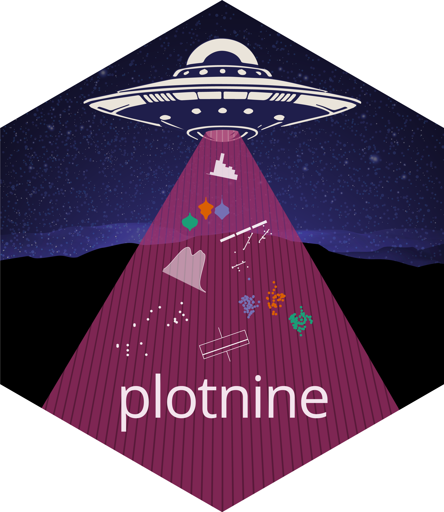

Download PDF
Data visualization with Plotnine :: Cheatsheet

Basics
Plotnine is based on the grammar of graphics, the idea that you can build every plot from the same components: a data frame, a coordinate system, and geoms—visual marks that represent data points.
To display values, map columns in the data to visual properties of the geom (aesthetics) like size, color, and x and y locations.
Complete the template below to build a plot. Data, a Geom Function, and Aes Mappings are required. Stat, Position, and the Coordinate, Facet, Scale, and Theme functions are not required and will supply sensible defaults.
from plotnine import *
from plotnine.data import *
(
ggplot(data=data_frame) # required
+ geom_function( # required
mapping=aes(**mappings), # required
stat=stat,
position=position,
)
+ coord_function()
+ facet_function()
+ scale_function()
+ theme(**settings)
)For example:
p = ggplot(mpg, aes("cty", "hwy")) + geom_point()
p.save("plot.png", width=6, height=4, dpi=200)Aesthetics
Common properties and values.
colorandfill: Color name or"#RRGGBB".linetype: String one of["solid", "dashed", "dashdot", "dotted"]or tuple of the form(offset, (on, off, on, off, ...)).size: Integer (in points).linewidth: Integer (in points).shape: Character or integer. Plotnine accepts the R-style shape integers (0–25) as well as Matplotlib marker strings ("o","^","s","D","v", etc.).
Geoms
Use a geom function to represent data points, use the geom’s aesthetic properties to represent variables. Each function returns a layer.
Graphical primitives
a = ggplot(economics, aes("date", "unemploy"))
b = ggplot(seals, aes(x="long", y="lat"))a + geom_blank(): Ensure limits include values across all plots.a + geom_path(lineend="butt", linejoin="round", linemitre=1): Connect observations in the order they appear.aes()arguments:x,y,alpha,color,group,linetype,size.a + geom_polygon(aes(alpha=50)): Connect points into polygons.aes()arguments:x,y,alpha,color,fill,group,subgroup,linetype,size.b + geom_rect(aes(xmin="long", ymin="lat", xmax="long+1", ymax="lat+1")): Draw a rectangle by connecting four corners (xmin,xmax,ymin,ymax).aes()arguments:xmin,xmax,ymin,ymax,alpha,color,fill,linetype,size.a + geom_ribbon(aes(ymin="unemploy-900", ymax="unemploy+900")): For eachx, plot an interval fromymintoymax.aes()arguments:x,ymin,ymax,alpha,color,fill,group,linetype,size.
Line segments
Common aesthetics: x, y, alpha, color, linetype, size.
b + geom_abline(aes(intercept=0, slope=1)): Draw a diagonal reference line with a givenslopeandintercept.b + geom_hline(aes(yintercept="lat")): Draw a horizontal reference line with a givenyintercept.b + geom_vline(aes(xintercept="long")): Draw a vertical reference line with a givenxintercept.b + geom_segment(aes(yend="lat+1", xend="long+1")): Draw a straight line from(x, y)to(xend, yend).b + geom_spoke(aes(angle="1:1155", radius=1)): Draw line segments using polar coordinates (angleandradius).
One continuous variable
c = ggplot(mpg, aes(x="hwy"))
c2 = ggplot(mpg)c + geom_area(stat="bin"): Draw an area plot.aes()arguments:x,y,alpha,color,fill,linetype,size.c + geom_density(kernel="gaussian"): Compute and draw kernel density estimates.aes()arguments:x,y,alpha,color,fill,group,linetype,size,weight.c + geom_dotplot(): Draw a dot plot.aes()arguments:x,y,alpha,color,fill.c + geom_freqpoly(): Draw a frequency polygon.aes()arguments:x,y,alpha,color,group,linetype,size.c + geom_histogram(binwidth=5): Draw a histogram.aes()arguments:x,y,alpha,color,fill,linetype,size,weight.c2 + geom_qq(aes(sample="hwy")): Draw a quantile-quantile plot.aes()arguments:x,y,alpha,color,fill,linetype,size,weight.
One discrete variable
d = ggplot(mpg, aes("fl"))d + geom_bar(): Draw a bar chart.aes()arguments:x,alpha,color,fill,linetype,size,weight.
Two continuous variables
e = ggplot(mpg, aes(x="cty", y="hwy"))e + geom_label(aes(label="cty"), nudge_x=1, nudge_y=1): Add text with a rectangle background.aes()arguments:x,y,label,alpha,angle,color,family,fontface,hjust,lineheight,size,vjust.e + geom_point(): Draw a scatter plot.aes()arguments:x,y,alpha,color,fill,shape,size,stroke.e + geom_quantile(): Fit and draw quantile regression for the plot data.aes()arguments:x,y,alpha,color,group,linetype,size,weight.e + geom_rug(sides="bl"): Draw a rug plot.aes()arguments:x,y,alpha,color,linetype.e + geom_smooth(method="lm"): Plot smoothed conditional means.aes()arguments:x,y,alpha,color,fill,group,linetype,size,weight.e + geom_text(aes(label="cty"), nudge_x=1, nudge_y=1): Add text to a plot.aes()arguments:x,y,label,alpha,angle,color,family,fontface,hjust,lineheight,size,vjust.
One discrete, one continuous variable
f = ggplot(mpg, aes(x="class", y="hwy"))f + geom_col(): Draw a bar plot.aes()arguments:x,y,alpha,color,fill,group,linetype,size.f + geom_boxplot(): Draw a box plot.aes()arguments:x,y,lower,middle,upper,ymax,ymin,alpha,color,fill,group,linetype,shape,size,weight.f + geom_dotplot(binaxis="y", stackdir="center"): Draw a dot plot.aes()arguments:x,y,alpha,color,fill,group.f + geom_violin(scale="area"): Draw a violin plot.aes()arguments:x,y,alpha,color,fill,group,linetype,size,weight.
Two discrete variables
g = ggplot(diamonds, aes(x="cut", y="color"))g + geom_count(): Plot a count of points in an area to address overplotting.aes()arguments:x,y,alpha,color,fill,shape,size,stroke.e + geom_jitter(height=2, width=2): Jitter points in a plot.aes()arguments:x,y,alpha,color,fill,shape,size.
Continuous function
h = ggplot(economics, aes("date", "unemploy"))h + geom_area(): Draw an area plot.aes()arguments:x,y,alpha,color,fill,linetype,size.h + geom_line(): Connect data points, ordered by the x axis variable.aes()arguments:x,y,alpha,color,group,linetype,size.h + geom_step(direction="hv"): Draw a stairstep plot.aes()arguments:x,y,alpha,color,group,linetype,size.
Continuous bivariate distribution
i = ggplot(diamonds, aes("carat", "price"))i + geom_bin_2d(binwidth=[0.25, 500]): Draw a heatmap of 2D rectangular bin counts.aes()arguments:x,y,alpha,color,fill,linetype,size,weight.i + geom_density_2d(): Plot contours from 2D kernel density estimation.aes()arguments:x,y,alpha,color,group,linetype,size.
Visualizing error
import polars as pl
df = pl.DataFrame({"grp": ["A", "B", "C"], "fit": [4, 5, 6], "se": [1, 2, 1]})
j = ggplot(df, aes("grp", "fit", ymin="fit-se", ymax="fit+se"))j + geom_crossbar(fatten=2): Draw a crossbar.aes()arguments:x,y,ymax,ymin,alpha,color,fill,group,linetype,size.j + geom_errorbar();j + geom_errorbarh(): Draw an errorbar.aes()arguments:x,ymax,ymin,alpha,color,group,linetype,size,width.j + geom_linerange(): Draw a line range.aes()arguments:x,ymin,ymax,alpha,color,group,linetype,size.j + geom_pointrange(): Draw a point range.aes()arguments:x,y,ymin,ymax,alpha,color,fill,group,linetype,shape,size.
Three continuous variables
import polars as pl
seals = pl.DataFrame(seals).with_columns(
z=(pl.col("delta_long")**2 + pl.col("delta_lat")**2).sqrt()
)
l = ggplot(seals, aes("long", "lat"))l + geom_contour(aes(z="z")): Draw 2D contour plot.aes()arguments:x,y,z,alpha,color,group,linetype,size,weight.l + geom_contour_filled(aes(fill="z")): Draw 2D contour plot with the space between lines filled.aes()arguments:x,y,alpha,color,fill,group,linetype,size,subgroup.l + geom_raster(aes(fill="z"), hjust=0.5, vjust=0.5, interpolate=False): Draw a raster plot.aes()arguments:x,y,alpha,fill.l + geom_tile(aes(fill="z")): Draw a tile plot.aes()arguments:x,y,alpha,color,fill,linetype,size,width.
Maps
import geopandas as gp
import geodatasets as gd
np = gp.read_file(gd.get_path("geoda.nepal"))ggplot(np) + geom_map(aes(fill="population")): Draw the appropriate geometric object depending on the simple features present in the data.
Stats
An alternative way to build a layer.
A stat builds new variables to plot (e.g., count, prop).
Visualize a stat by changing the default stat of a geom function, geom_bar(stat="count"), or by using a stat function, stat_count(geom="bar"), which calls a default geom to make a layer (equivalent to a function). Use after_stat(name) syntax to map the stat variable name to an aesthetic.
i + stat_density_2d(aes(fill=after_stat("level")), geom="polygon")In this example, "polygon" is the geom to use, stat_density_2d() is the stat function, aes() contains the geom mappings, and level is the variable created by the stat.
c + stat_bin(binwidth=1, boundary=10):x,y|count,ncount,density,ndensityc + stat_count(width=1):x,y|count,propc + stat_density(adjust=1, kernel="gaussian"):x,y|count,density,scalede + stat_bin_2d(bins=30, drop=True):x,y,fill|count,densitye + stat_density_2d(contour=True, n=100):x,y,color,size|levele + stat_ellipse(level=0.95, segments=51, type="t")l + stat_contour(aes(z="z")):x,y,z,order|levell + stat_summary_hex(aes(z="z"), bins=30, fun=max):x,y,z,fill|valuel + stat_summary_2d(aes(z="z"), bins=30, fun=mean):x,y,z,fill|valuef + stat_boxplot(coef=1.5):x,y|lower,middle,upper,width,ymin,ymaxf + stat_ydensity(kernel="gaussian", scale="area"):x,y|density,scaled,count,n,violinwidth,widthe + stat_ecdf(n=40):x,y|x,ye + stat_quantile(quantiles=(0.1, 0.9), formula="y ~ np.log(x)"):x,y|quantilee + stat_smooth(method="lm", formula="y ~ x", se=True, level=0.95):x,y|se,x,y,ymin,ymax
import scipy.stats as stats
ggplot() +
lims(x=(-5, 5)) +
stat_function(fun=stats.norm.pdf, n=20, geom="point") # x | y
ggplot() +
stat_qq(aes(sample=range(100))) # x | y, sample, theoreticale + stat_sum():x,y,size|n,prope + stat_summary(fun_data="mean_cl_boot")h + stat_summary_bin(fun="mean", geom="bar")e + stat_identity()e + stat_unique()
Scales
Override default mappings.
Scales map data values to the visual values of an aesthetic. To change a mapping, add a new scale.
n = d + geom_bar(aes(fill="fl"))
n + scale_fill_manual(
values=["palegreen", "green", "forestgreen", "darkgreen"],
limits=["d", "e", "p", "r"],
breaks=["d", "e", "p", "r"],
labels=["D", "E", "P", "R"],
name="fuel")In this example, scale_ specifies a scale function, fill is the aesthetic to adjust, and manual is the prepackaged scale to use.
values contains scale-specific arguments, limits specifies the range of values to include in mappings, breaks specifies the breaks to use in the legend/axis, and name and labels specify the title and labels to use in the legend/axis.
General purpose scales
Use with most aesthetics.
scale_*_continuous(): Map continuous values to visual ones.scale_*_discrete(): Map discrete values to visual ones.scale_*_binned(): Map continuous values to discrete bins.scale_*_identity(): Use data values literally.scale_*_manual(values=[]): Map discrete values to manually chosen visual ones.scale_*_date(date_labels="%d/%m", date_breaks="2 weeks"): Treat data values as dates.scale_*_datetime(): Treat data values as date times.
X and Y location scales
Use with x or y aesthetics (x shown here).
scale_x_log10(): Plotxon log10 scale.scale_x_reverse(): Reverse the direction of the x axis.scale_x_sqrt(): Plotxon square root scale.
Color and fill scales, discrete
n + scale_fill_brewer(palette="Blues"): Use color scales from ColorBrewer.n + scale_fill_grey(start=0.2, end=0.8, na_value="red"): Use a grey gradient color scale.
Color and fill scales, continuous
o = c + geom_dotplot(aes(fill="x"))o + scale_fill_distiller(palette="Blues"): Interpolate a palette into a continuous scale.o + scale_fill_gradient(low="red", high="yellow"): Create a two color gradient.o + scale_fill_gradient2(low="red", high="blue", mid="white", midpoint=25): Create a diverging color gradient.o + scale_fill_gradientn(colors=["green", "purple", "papayawhip"]): Create an n-color gradient.
Shape and size scales
p = e + geom_point(aes(shape="fl", size="cyl"))p + scale_shape() + scale_size(): Map discrete values to shape and size aesthetics. See page 1 for shapes.p + scale_shape_manual(values=["o", "^", "s", "D", "v"]): Map discrete values to specified shape values.p + scale_radius(range=range(1, 7)): Map values to a shape’s radius.p + scale_size_area(max_size=6): Likescale_size()but maps zero values to zero size.
Coordinate Systems
plt_obj = d + geom_bar()plt_obj + coord_cartesian(xlim=[0, 5]):xlim,ylim. The default cartesian coordinate system.plt_obj + coord_fixed(ratio=1/2):ratio,xlim,ylim. Cartesian coordinates with fixed aspect ratio between x and y units.plt_obj + coord_flip(): Flip cartesian coordinates by switching x and y aesthetic mappings.plt_obj + coord_trans(y="sqrt"):x,y,xlim,ylim. Transformed cartesian coordinates.
Position Adjustments
Position adjustments determine how to arrange geoms that would otherwise occupy the same space.
s = ggplot(mpg, aes("fl", fill="drv"))s + geom_bar(position="dodge"): Arrange elements side by side.s + geom_bar(position="fill"): Stack elements on top of one another, normalize height.e + geom_point(position="jitter"): Add random noise to X and Y position of each element to avoid overplotting.e + geom_label(position="nudge"): Nudge labels away from points.s + geom_bar(position="stack"): Stack elements on top of one another.
Each position adjustment can be recast as a function with manual width and height arguments:
s + geom_bar(position=position_dodge(width=1))Themes
plt_obj + theme_bw(): White background with grid.plt_obj + theme_gray(): Grey background (default).plt_obj + theme_dark(): Dark for contrast.plt_obj + theme_classic()plt_obj + theme_light()plt_obj + theme_linedraw()plt_obj + theme_minimal()plt_obj + theme_void(): Empty theme.plt_obj + theme(): Customize aspects of the theme such as axis, legend, panel, and facet properties.
plt_obj + theme(plot_title_position="plot")
plt_obj + theme(panel_background=element_rect(fill="blue"))Faceting
Facets divide a plot into subplots based on the values of one or more discrete variables.
t = ggplot(mpg, aes("cty", "hwy")) + geom_point()t + facet_grid(cols="fl"): Facet into columns based on fl.t + facet_grid("year"): Facet into rows based on year.t + facet_grid("year", "fl"): Facet into both rows and columns.t + facet_wrap("fl", ncol=4): Wrap facets into a rectangular layout.
Set scales to let axis limits vary across facets:
t + facet_grid("drv", "fl", scales="free"): Also"free_x"for x axis limits to adjust to individual facets and"free_y"for y axis limits to adjust to individual facets.
Set labeller to adjust facet label:
t + facet_grid(cols="fl", labeller="label_both"): Labels each facet as “fl: c”, “fl: d”, etc.
Labels and Legends
Use labs() to label the elements of your plot.
t + labs(
x="New x axis label",
y="New y axis label",
title="Add a title above the plot",
subtitle="Add a subtitle below title",
caption="Add a caption below plot",
tag="Add a tag to the plot",
fill="New fill legend title")t + annotate(geom="text", x=8, y=9, label="A"): Places a geom with manually selected aesthetics.p + guides(x=guide_axis(n_dodge=2)): Avoid crowded or overlapping labels withn_dodgeorangle.n + guides(fill="none"): Set legend type for each aesthetic:colorbar,legend, ornone(no legend).n + theme(legend_position="bottom"): Place legend at “bottom”, “top”, “left”, or “right”.n + scale_fill_discrete(name="Title", labels=["A", "B", "C", "D", "E"]): Set legend title and labels with a scale function.
Zooming
Without clipping (preferred):
t + coord_cartesian(xlim=[10, 100], ylim=[0, 20])
With clipping (removes unseen data points):
t + lims(x=(10, 100), y=(0, 20)): option 1.t + scale_x_continuous(limits=[10, 100]) + scale_y_continuous(limits=[0, 20]): option 2.
CC BY SA Posit Software, PBC • info@posit.co • posit.co
Learn more at plotnine.org.
Updated: 2026-08.